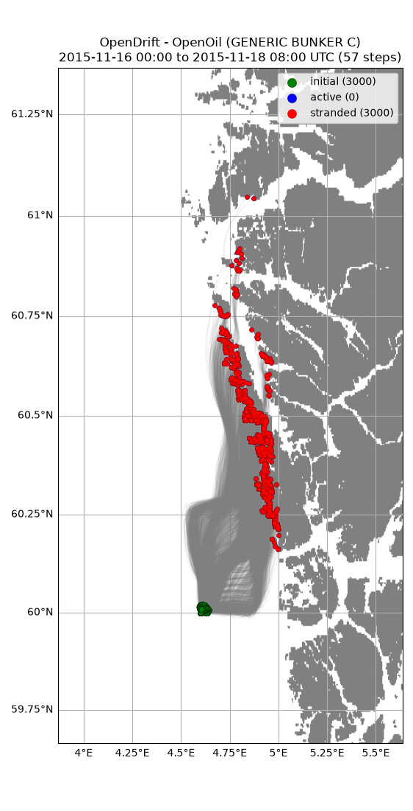
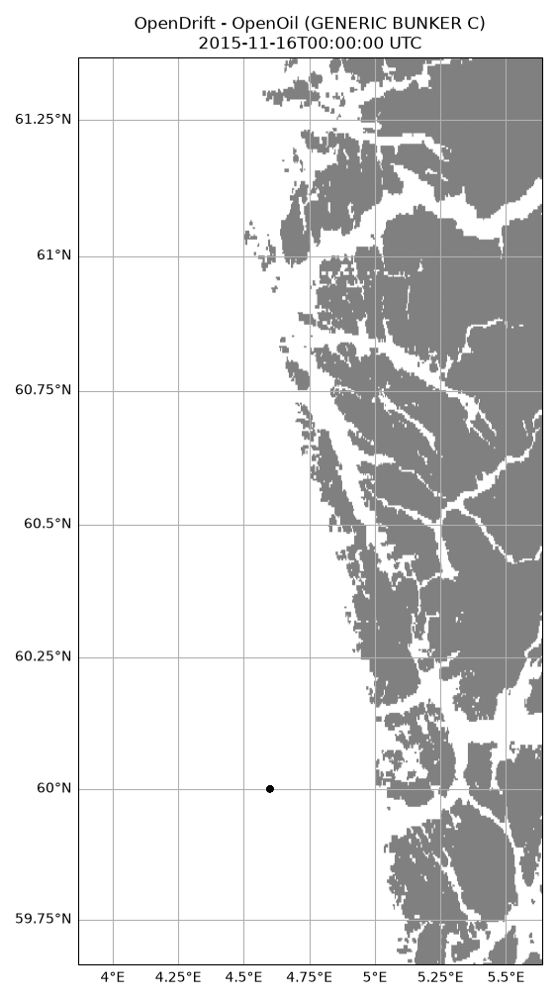

Note
Go to the end to download the full example code.
Generic example
from datetime import datetime, timedelta
from opendrift import test_data_folder as tdf
from opendrift.readers import reader_netCDF_CF_generic
from opendrift.models.openoil import OpenOil
o = OpenOil(loglevel=20) # Set loglevel to 0 for debug information
# Arome atmospheric model
reader_arome = reader_netCDF_CF_generic.Reader(tdf + '16Nov2015_NorKyst_z_surface/arome_subset_16Nov2015.nc')
# Norkyst ocean model
reader_norkyst = reader_netCDF_CF_generic.Reader(tdf + '16Nov2015_NorKyst_z_surface/norkyst800_subset_16Nov2015.nc')
# Uncomment to use live data from thredds
#reader_arome = reader_netCDF_CF_generic.Reader('https://thredds.met.no/thredds/dodsC/mepslatest/meps_lagged_6_h_latest_2_5km_latest.nc')
#reader_norkyst = reader_netCDF_CF_generic.Reader('https://thredds.met.no/thredds/dodsC/fou-hi/norkystv3_800m_m00_be')
o.add_reader([reader_norkyst, reader_arome])
17:05:09 INFO opendrift:569: OpenDriftSimulation initialised (version 1.14.11 / v1.14.12-66-g07283eb)
17:05:09 INFO opendrift.readers:67: Opening file with xr.open_dataset
17:05:10 INFO opendrift.readers.reader_netCDF_CF_generic:340: Detected dimensions: {'time': 'time', 'x': 'x', 'y': 'y'}
17:05:10 INFO opendrift.readers:67: Opening file with xr.open_dataset
17:05:10 INFO opendrift.readers.reader_netCDF_CF_generic:340: Detected dimensions: {'x': 'X', 'y': 'Y', 'z': 'depth', 'time': 'time'}
Seeding some particles time = datetime(2015, 9, 22, 6, 0, 0)
time = [reader_arome.start_time,
reader_arome.start_time + timedelta(hours=30)]
#time = reader_arome.start_time
Adjusting some configuration
o.set_config('drift:vertical_mixing', False)
o.set_config('processes:dispersion', False)
o.set_config('processes:evaporation', False)
o.set_config('processes:emulsification', True)
o.set_config('drift:current_uncertainty', .1)
o.set_config('drift:wind_uncertainty', 1)
# Seed oil elements at defined position and time
o.seed_elements(lon=4.6, lat=60.0, radius=50, number=3000, time=time,
wind_drift_factor=.02)
17:05:10 INFO opendrift.models.openoil.openoil:1720: Oil type not specified, using default: GENERIC BUNKER C
17:05:10 INFO opendrift.models.openoil.adios.dirjs:86: Querying ADIOS database for oil: GENERIC BUNKER C
17:05:10 INFO opendrift.models.openoil.openoil:1731: Using density 988.1 and viscosity 0.021692333877975332 of oiltype GENERIC BUNKER C
17:05:10 INFO opendrift.models.basemodel.environment:203: Adding a global landmask from GSHHG
17:05:16 INFO opendrift.models.basemodel.environment:227: Fallback values will be used for the following variables which have no readers:
17:05:16 INFO opendrift.models.basemodel.environment:230: sea_surface_height: 0.000000
17:05:16 INFO opendrift.models.basemodel.environment:230: upward_sea_water_velocity: 0.000000
17:05:16 INFO opendrift.models.basemodel.environment:230: sea_surface_wave_significant_height: 0.000000
17:05:16 INFO opendrift.models.basemodel.environment:230: sea_surface_wave_stokes_drift_x_velocity: 0.000000
17:05:16 INFO opendrift.models.basemodel.environment:230: sea_surface_wave_stokes_drift_y_velocity: 0.000000
17:05:16 INFO opendrift.models.basemodel.environment:230: sea_surface_wave_period_at_variance_spectral_density_maximum: 0.000000
17:05:16 INFO opendrift.models.basemodel.environment:230: sea_surface_wave_mean_period_from_variance_spectral_density_second_frequency_moment: 0.000000
17:05:16 INFO opendrift.models.basemodel.environment:230: sea_ice_area_fraction: 0.000000
17:05:16 INFO opendrift.models.basemodel.environment:230: sea_ice_x_velocity: 0.000000
17:05:16 INFO opendrift.models.basemodel.environment:230: sea_ice_y_velocity: 0.000000
17:05:16 INFO opendrift.models.basemodel.environment:230: sea_water_temperature: 10.000000
17:05:16 INFO opendrift.models.basemodel.environment:230: sea_water_salinity: 34.000000
17:05:16 INFO opendrift.models.basemodel.environment:230: sea_floor_depth_below_sea_level: 10000.000000
17:05:16 INFO opendrift.models.basemodel.environment:230: horizontal_diffusivity: 0.000000
17:05:16 INFO opendrift.models.basemodel.environment:230: ocean_vertical_diffusivity: 0.020000
17:05:16 INFO opendrift.models.basemodel.environment:230: ocean_mixed_layer_thickness: 50.000000
Running model
o.run(end_time=reader_norkyst.end_time, time_step=1800,
time_step_output=3600, outfile='openoil.nc')
17:05:16 INFO opendrift:1911: Skipping environment variable upward_sea_water_velocity because of condition ['drift:vertical_advection', 'is', False]
17:05:16 INFO opendrift:1911: Skipping environment variable ocean_vertical_diffusivity because of condition ['drift:vertical_mixing', 'is', False]
17:05:16 INFO opendrift:1911: Skipping environment variable ocean_mixed_layer_thickness because of condition ['drift:vertical_mixing', 'is', False]
17:05:16 INFO opendrift:1922: Storing previous values of element property lon because of condition (('general:coastline_action', 'in', ['stranding', 'previous']), 'or', ('general:seafloor_action', 'in', ['previous']))
17:05:16 INFO opendrift:1922: Storing previous values of element property lat because of condition (('general:coastline_action', 'in', ['stranding', 'previous']), 'or', ('general:seafloor_action', 'in', ['previous']))
17:05:16 INFO opendrift:958: Using existing reader for land_binary_mask to move elements to ocean
17:05:16 INFO opendrift:990: All points are in ocean
17:05:16 INFO opendrift.models.openoil.openoil:697: Oil-water surface tension is 0.035935 Nm
17:05:16 INFO opendrift.models.openoil.openoil:710: Max water fraction not available for GENERIC BUNKER C, using default
17:05:16 INFO opendrift:2238: 2015-11-16 00:00:00 - step 1 of 132 - 50 active elements (0 deactivated)
17:05:16 INFO opendrift:2238: 2015-11-16 00:30:00 - step 2 of 132 - 100 active elements (0 deactivated)
17:05:16 INFO opendrift:2238: 2015-11-16 01:00:00 - step 3 of 132 - 150 active elements (0 deactivated)
17:05:16 INFO opendrift:2238: 2015-11-16 01:30:00 - step 4 of 132 - 200 active elements (0 deactivated)
17:05:16 INFO opendrift:2238: 2015-11-16 02:00:00 - step 5 of 132 - 250 active elements (0 deactivated)
17:05:16 INFO opendrift:2238: 2015-11-16 02:30:00 - step 6 of 132 - 300 active elements (0 deactivated)
17:05:16 INFO opendrift:2238: 2015-11-16 03:00:00 - step 7 of 132 - 350 active elements (0 deactivated)
17:05:16 INFO opendrift:2238: 2015-11-16 03:30:00 - step 8 of 132 - 400 active elements (0 deactivated)
17:05:16 INFO opendrift:2238: 2015-11-16 04:00:00 - step 9 of 132 - 450 active elements (0 deactivated)
17:05:16 INFO opendrift:2238: 2015-11-16 04:30:00 - step 10 of 132 - 500 active elements (0 deactivated)
17:05:16 INFO opendrift:2238: 2015-11-16 05:00:00 - step 11 of 132 - 550 active elements (0 deactivated)
17:05:16 INFO opendrift:2238: 2015-11-16 05:30:00 - step 12 of 132 - 600 active elements (0 deactivated)
17:05:16 INFO opendrift:2238: 2015-11-16 06:00:00 - step 13 of 132 - 650 active elements (0 deactivated)
17:05:16 INFO opendrift:2238: 2015-11-16 06:30:00 - step 14 of 132 - 700 active elements (0 deactivated)
17:05:16 INFO opendrift:2238: 2015-11-16 07:00:00 - step 15 of 132 - 750 active elements (0 deactivated)
17:05:17 INFO opendrift:2238: 2015-11-16 07:30:00 - step 16 of 132 - 800 active elements (0 deactivated)
17:05:17 INFO opendrift:2238: 2015-11-16 08:00:00 - step 17 of 132 - 850 active elements (0 deactivated)
17:05:17 INFO opendrift:2238: 2015-11-16 08:30:00 - step 18 of 132 - 900 active elements (0 deactivated)
17:05:17 INFO opendrift:2238: 2015-11-16 09:00:00 - step 19 of 132 - 950 active elements (0 deactivated)
17:05:17 INFO opendrift:2238: 2015-11-16 09:30:00 - step 20 of 132 - 1000 active elements (0 deactivated)
17:05:17 INFO opendrift:2238: 2015-11-16 10:00:00 - step 21 of 132 - 1050 active elements (0 deactivated)
17:05:17 INFO opendrift:2238: 2015-11-16 10:30:00 - step 22 of 132 - 1100 active elements (0 deactivated)
17:05:17 INFO opendrift:2238: 2015-11-16 11:00:00 - step 23 of 132 - 1150 active elements (0 deactivated)
17:05:17 INFO opendrift:2238: 2015-11-16 11:30:00 - step 24 of 132 - 1200 active elements (0 deactivated)
17:05:17 INFO opendrift:2238: 2015-11-16 12:00:00 - step 25 of 132 - 1250 active elements (0 deactivated)
17:05:17 INFO opendrift:2238: 2015-11-16 12:30:00 - step 26 of 132 - 1300 active elements (0 deactivated)
17:05:17 INFO opendrift:2238: 2015-11-16 13:00:00 - step 27 of 132 - 1350 active elements (0 deactivated)
17:05:17 INFO opendrift:2238: 2015-11-16 13:30:00 - step 28 of 132 - 1400 active elements (0 deactivated)
17:05:17 INFO opendrift:2238: 2015-11-16 14:00:00 - step 29 of 132 - 1450 active elements (0 deactivated)
17:05:17 INFO opendrift:2238: 2015-11-16 14:30:00 - step 30 of 132 - 1500 active elements (0 deactivated)
17:05:17 INFO opendrift:2238: 2015-11-16 15:00:00 - step 31 of 132 - 1550 active elements (0 deactivated)
17:05:17 INFO opendrift:2238: 2015-11-16 15:30:00 - step 32 of 132 - 1600 active elements (0 deactivated)
17:05:17 INFO opendrift:2238: 2015-11-16 16:00:00 - step 33 of 132 - 1650 active elements (0 deactivated)
17:05:17 INFO opendrift:2238: 2015-11-16 16:30:00 - step 34 of 132 - 1700 active elements (0 deactivated)
17:05:17 INFO opendrift:2238: 2015-11-16 17:00:00 - step 35 of 132 - 1750 active elements (0 deactivated)
17:05:17 INFO opendrift:2238: 2015-11-16 17:30:00 - step 36 of 132 - 1800 active elements (0 deactivated)
17:05:17 INFO opendrift:2238: 2015-11-16 18:00:00 - step 37 of 132 - 1850 active elements (0 deactivated)
17:05:18 INFO opendrift:2238: 2015-11-16 18:30:00 - step 38 of 132 - 1900 active elements (0 deactivated)
17:05:18 INFO opendrift:2238: 2015-11-16 19:00:00 - step 39 of 132 - 1950 active elements (0 deactivated)
17:05:18 INFO opendrift:2238: 2015-11-16 19:30:00 - step 40 of 132 - 2000 active elements (0 deactivated)
17:05:18 INFO opendrift:2238: 2015-11-16 20:00:00 - step 41 of 132 - 2050 active elements (0 deactivated)
17:05:18 INFO opendrift:2238: 2015-11-16 20:30:00 - step 42 of 132 - 2100 active elements (0 deactivated)
17:05:18 INFO opendrift:2238: 2015-11-16 21:00:00 - step 43 of 132 - 2150 active elements (0 deactivated)
17:05:18 INFO opendrift:2238: 2015-11-16 21:30:00 - step 44 of 132 - 2200 active elements (0 deactivated)
17:05:18 INFO opendrift:2238: 2015-11-16 22:00:00 - step 45 of 132 - 2250 active elements (0 deactivated)
17:05:18 INFO opendrift:2238: 2015-11-16 22:30:00 - step 46 of 132 - 2297 active elements (3 deactivated)
17:05:18 INFO opendrift:2238: 2015-11-16 23:00:00 - step 47 of 132 - 2335 active elements (15 deactivated)
17:05:18 INFO opendrift:2238: 2015-11-16 23:30:00 - step 48 of 132 - 2363 active elements (37 deactivated)
17:05:18 INFO opendrift:2238: 2015-11-17 00:00:00 - step 49 of 132 - 2387 active elements (63 deactivated)
17:05:18 INFO opendrift:2238: 2015-11-17 00:30:00 - step 50 of 132 - 2372 active elements (128 deactivated)
17:05:18 INFO opendrift:2238: 2015-11-17 01:00:00 - step 51 of 132 - 2361 active elements (189 deactivated)
17:05:18 INFO opendrift:2238: 2015-11-17 01:30:00 - step 52 of 132 - 2330 active elements (270 deactivated)
17:05:19 INFO opendrift:2238: 2015-11-17 02:00:00 - step 53 of 132 - 2314 active elements (336 deactivated)
17:05:19 INFO opendrift:2238: 2015-11-17 02:30:00 - step 54 of 132 - 2290 active elements (410 deactivated)
17:05:19 INFO opendrift:2238: 2015-11-17 03:00:00 - step 55 of 132 - 2285 active elements (465 deactivated)
17:05:19 INFO opendrift:2238: 2015-11-17 03:30:00 - step 56 of 132 - 2247 active elements (553 deactivated)
17:05:19 INFO opendrift:2238: 2015-11-17 04:00:00 - step 57 of 132 - 2183 active elements (667 deactivated)
17:05:19 INFO opendrift:2238: 2015-11-17 04:30:00 - step 58 of 132 - 2123 active elements (777 deactivated)
17:05:19 INFO opendrift:2238: 2015-11-17 05:00:00 - step 59 of 132 - 2049 active elements (901 deactivated)
17:05:19 INFO opendrift:2238: 2015-11-17 05:30:00 - step 60 of 132 - 2000 active elements (1000 deactivated)
17:05:19 INFO opendrift:2238: 2015-11-17 06:00:00 - step 61 of 132 - 1921 active elements (1079 deactivated)
17:05:19 INFO opendrift:2238: 2015-11-17 06:30:00 - step 62 of 132 - 1834 active elements (1166 deactivated)
17:05:20 INFO opendrift:2238: 2015-11-17 07:00:00 - step 63 of 132 - 1756 active elements (1244 deactivated)
17:05:20 INFO opendrift:2238: 2015-11-17 07:30:00 - step 64 of 132 - 1699 active elements (1301 deactivated)
17:05:20 INFO opendrift:2238: 2015-11-17 08:00:00 - step 65 of 132 - 1648 active elements (1352 deactivated)
17:05:20 INFO opendrift:2238: 2015-11-17 08:30:00 - step 66 of 132 - 1610 active elements (1390 deactivated)
17:05:20 INFO opendrift:2238: 2015-11-17 09:00:00 - step 67 of 132 - 1583 active elements (1417 deactivated)
17:05:20 INFO opendrift:2238: 2015-11-17 09:30:00 - step 68 of 132 - 1539 active elements (1461 deactivated)
17:05:20 INFO opendrift:2238: 2015-11-17 10:00:00 - step 69 of 132 - 1480 active elements (1520 deactivated)
17:05:20 INFO opendrift:2238: 2015-11-17 10:30:00 - step 70 of 132 - 1432 active elements (1568 deactivated)
17:05:20 INFO opendrift:2238: 2015-11-17 11:00:00 - step 71 of 132 - 1390 active elements (1610 deactivated)
17:05:20 INFO opendrift:2238: 2015-11-17 11:30:00 - step 72 of 132 - 1324 active elements (1676 deactivated)
17:05:20 INFO opendrift:2238: 2015-11-17 12:00:00 - step 73 of 132 - 1248 active elements (1752 deactivated)
17:05:21 INFO opendrift:2238: 2015-11-17 12:30:00 - step 74 of 132 - 1163 active elements (1837 deactivated)
17:05:21 INFO opendrift:2238: 2015-11-17 13:00:00 - step 75 of 132 - 1068 active elements (1932 deactivated)
17:05:21 INFO opendrift:2238: 2015-11-17 13:30:00 - step 76 of 132 - 956 active elements (2044 deactivated)
17:05:21 INFO opendrift:2238: 2015-11-17 14:00:00 - step 77 of 132 - 877 active elements (2123 deactivated)
17:05:21 INFO opendrift:2238: 2015-11-17 14:30:00 - step 78 of 132 - 804 active elements (2196 deactivated)
17:05:21 INFO opendrift:2238: 2015-11-17 15:00:00 - step 79 of 132 - 741 active elements (2259 deactivated)
17:05:21 INFO opendrift:2238: 2015-11-17 15:30:00 - step 80 of 132 - 693 active elements (2307 deactivated)
17:05:21 INFO opendrift:2238: 2015-11-17 16:00:00 - step 81 of 132 - 652 active elements (2348 deactivated)
17:05:21 INFO opendrift:2238: 2015-11-17 16:30:00 - step 82 of 132 - 614 active elements (2386 deactivated)
17:05:21 INFO opendrift:2238: 2015-11-17 17:00:00 - step 83 of 132 - 589 active elements (2411 deactivated)
17:05:21 INFO opendrift:2238: 2015-11-17 17:30:00 - step 84 of 132 - 567 active elements (2433 deactivated)
17:05:21 INFO opendrift:2238: 2015-11-17 18:00:00 - step 85 of 132 - 554 active elements (2446 deactivated)
17:05:22 INFO opendrift:2238: 2015-11-17 18:30:00 - step 86 of 132 - 539 active elements (2461 deactivated)
17:05:22 INFO opendrift:2238: 2015-11-17 19:00:00 - step 87 of 132 - 527 active elements (2473 deactivated)
17:05:22 INFO opendrift:2238: 2015-11-17 19:30:00 - step 88 of 132 - 509 active elements (2491 deactivated)
17:05:22 INFO opendrift:2238: 2015-11-17 20:00:00 - step 89 of 132 - 488 active elements (2512 deactivated)
17:05:22 INFO opendrift:2238: 2015-11-17 20:30:00 - step 90 of 132 - 478 active elements (2522 deactivated)
17:05:22 INFO opendrift:2238: 2015-11-17 21:00:00 - step 91 of 132 - 467 active elements (2533 deactivated)
17:05:22 INFO opendrift:2238: 2015-11-17 21:30:00 - step 92 of 132 - 462 active elements (2538 deactivated)
17:05:22 INFO opendrift:2238: 2015-11-17 22:00:00 - step 93 of 132 - 459 active elements (2541 deactivated)
17:05:22 INFO opendrift:2238: 2015-11-17 22:30:00 - step 94 of 132 - 454 active elements (2546 deactivated)
17:05:22 INFO opendrift:2238: 2015-11-17 23:00:00 - step 95 of 132 - 445 active elements (2555 deactivated)
17:05:22 INFO opendrift:2238: 2015-11-17 23:30:00 - step 96 of 132 - 430 active elements (2570 deactivated)
17:05:22 INFO opendrift:2238: 2015-11-18 00:00:00 - step 97 of 132 - 403 active elements (2597 deactivated)
17:05:22 INFO opendrift:2238: 2015-11-18 00:30:00 - step 98 of 132 - 372 active elements (2628 deactivated)
17:05:22 INFO opendrift:2238: 2015-11-18 01:00:00 - step 99 of 132 - 334 active elements (2666 deactivated)
17:05:22 INFO opendrift:2238: 2015-11-18 01:30:00 - step 100 of 132 - 300 active elements (2700 deactivated)
17:05:22 INFO opendrift:2238: 2015-11-18 02:00:00 - step 101 of 132 - 245 active elements (2755 deactivated)
17:05:23 INFO opendrift:2238: 2015-11-18 02:30:00 - step 102 of 132 - 187 active elements (2813 deactivated)
17:05:23 INFO opendrift:2238: 2015-11-18 03:00:00 - step 103 of 132 - 125 active elements (2875 deactivated)
17:05:23 INFO opendrift:2238: 2015-11-18 03:30:00 - step 104 of 132 - 61 active elements (2939 deactivated)
17:05:23 INFO opendrift:2238: 2015-11-18 04:00:00 - step 105 of 132 - 33 active elements (2967 deactivated)
17:05:23 INFO opendrift:2238: 2015-11-18 04:30:00 - step 106 of 132 - 11 active elements (2989 deactivated)
17:05:23 INFO opendrift:2238: 2015-11-18 05:00:00 - step 107 of 132 - 7 active elements (2993 deactivated)
17:05:23 INFO opendrift:2238: 2015-11-18 05:30:00 - step 108 of 132 - 3 active elements (2997 deactivated)
17:05:23 INFO opendrift:2238: 2015-11-18 06:00:00 - step 109 of 132 - 1 active elements (2999 deactivated)
17:05:23 INFO opendrift:2238: 2015-11-18 06:30:00 - step 110 of 132 - 1 active elements (2999 deactivated)
17:05:23 INFO opendrift:2238: 2015-11-18 07:00:00 - step 111 of 132 - 1 active elements (2999 deactivated)
17:05:23 INFO opendrift:2238: 2015-11-18 07:30:00 - step 112 of 132 - 1 active elements (2999 deactivated)
17:05:23 INFO opendrift:2238: 2015-11-18 08:00:00 - step 113 of 132 - 1 active elements (2999 deactivated)
17:05:23 WARNING opendrift:2314: The simulation stopped before requested end time was reached.
17:05:23 INFO opendrift:2316: ========================
17:05:23 INFO opendrift:2317: End of simulation:
17:05:23 INFO opendrift:2318: No more active or scheduled elements, quitting.
17:05:23 INFO opendrift:2319: Traceback (most recent call last):
File "/root/project/opendrift/models/basemodel/__init__.py", line 2301, in run
raise ValueError('No more active or scheduled elements, quitting.')
ValueError: No more active or scheduled elements, quitting.
17:05:23 INFO opendrift:2320: 'The simulation stopped before requested end time was reached.'
17:05:23 INFO opendrift:2323: ========================
Print and plot results
o.plot(fast=True)
#o.plot(background=['x_sea_water_velocity', 'y_sea_water_velocity'], buffer=.5)
#o.animation(fast=True)
#o.animation(density=True, show_elements=False, fast=True)

17:05:25 WARNING opendrift:2614: Plotting fast. This will make your plots less accurate.
(<GeoAxes: title={'center': 'OpenDrift - OpenOil (GENERIC BUNKER C)\n2015-11-16 00:00 to 2015-11-18 08:00 UTC (57 steps)'}>, <Figure size 562.866x1100 with 1 Axes>)
Or an animation can be generated with:
o.animation(fast=True)
17:05:30 WARNING opendrift:2614: Plotting fast. This will make your plots less accurate.
17:05:32 INFO opendrift:4889: Saving animation to /root/project/docs/source/gallery/animations/example_generic_0.gif...
17:05:53 INFO opendrift:3297: Time to make animation: 0:00:22.464111

Total running time of the script: (0 minutes 51.951 seconds)